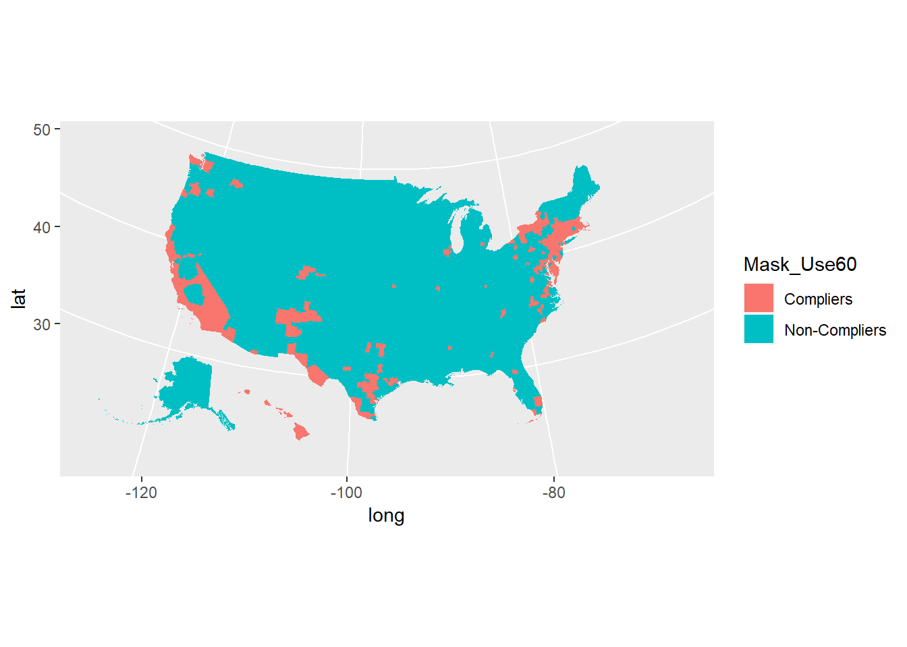
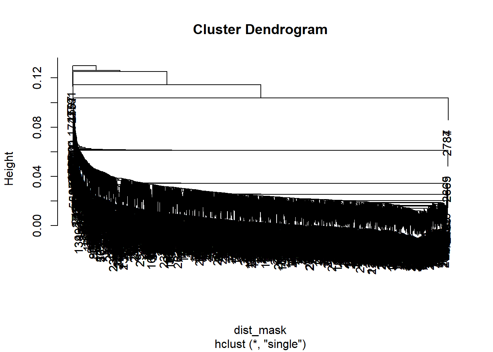
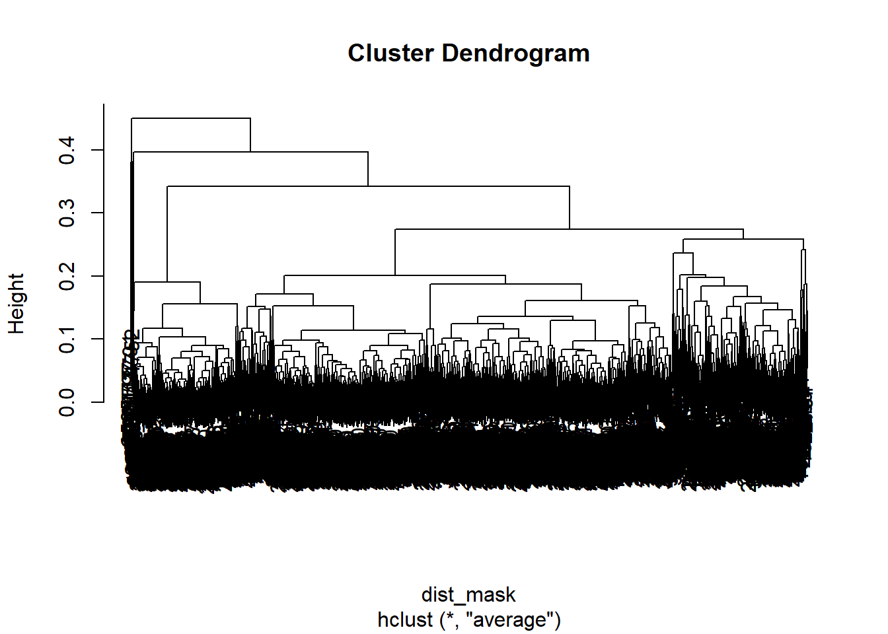
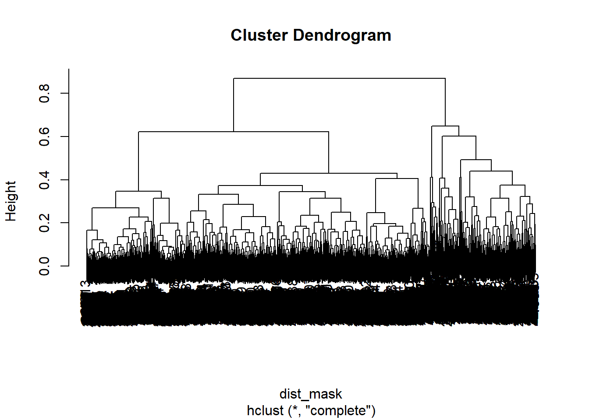
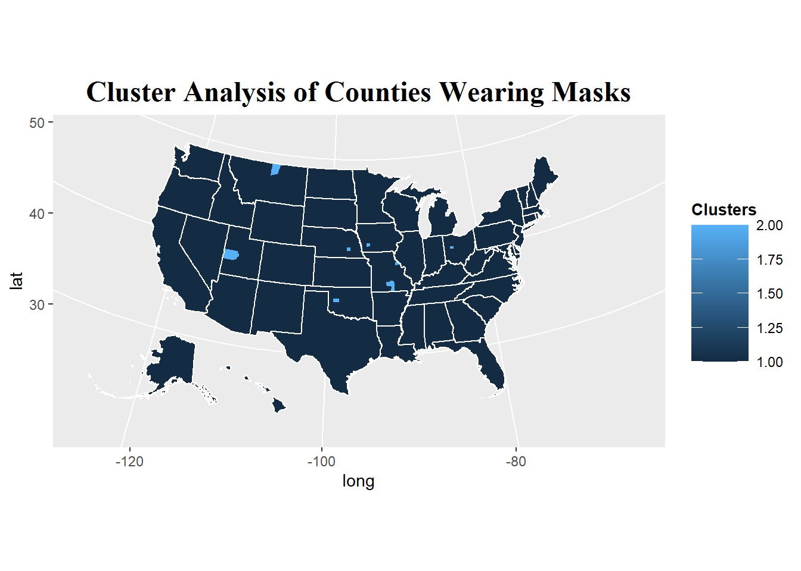
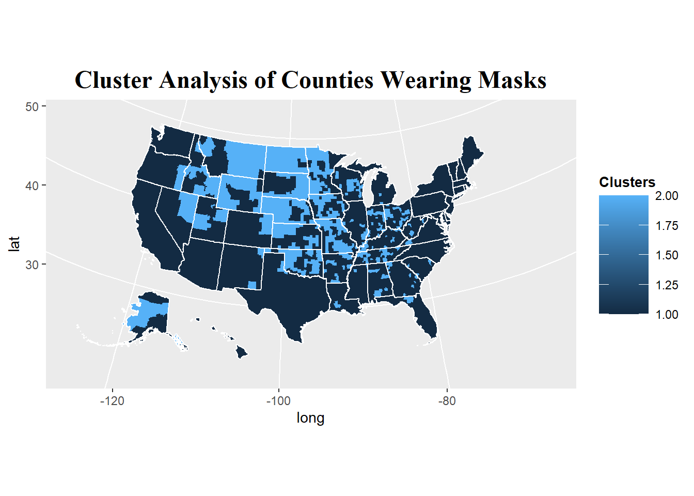
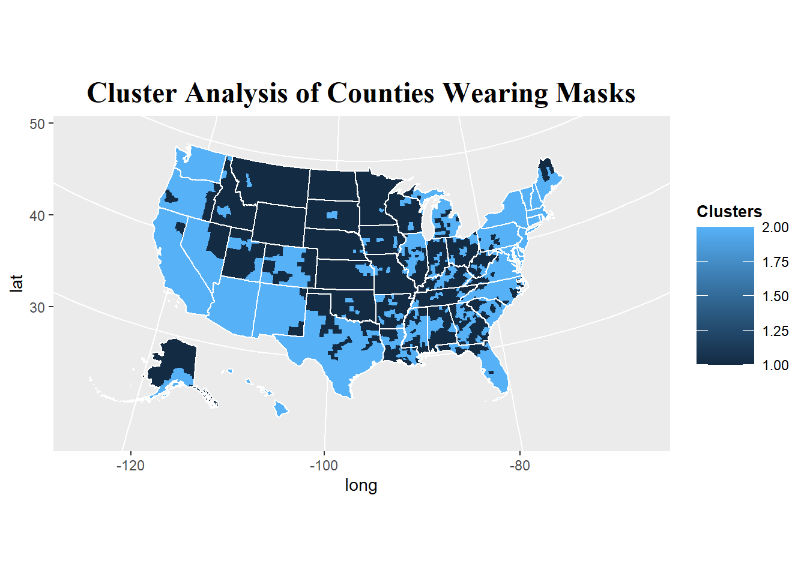
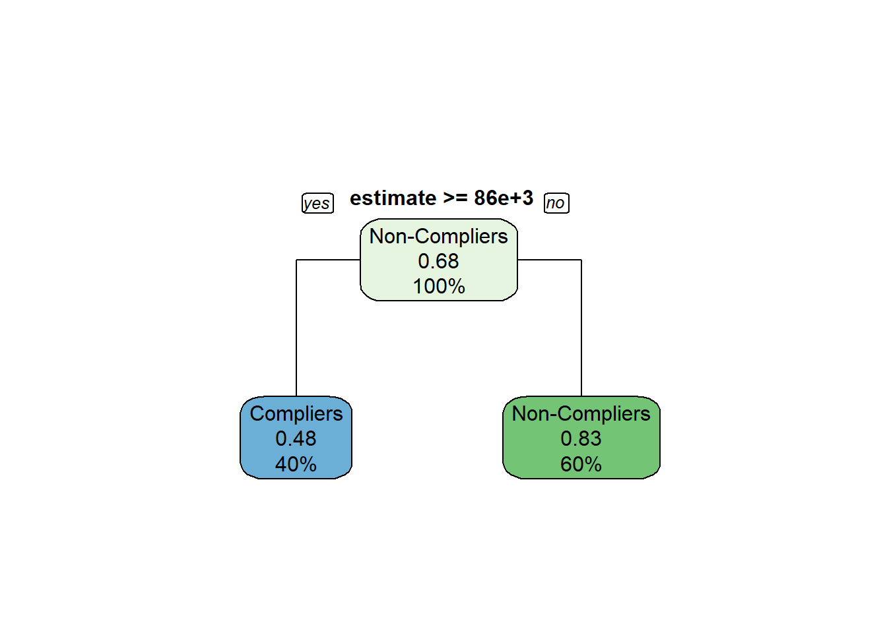

Project
Elaina Lin
3/16/2021
1. Here, we will visualize the mask use data.
We are interested in developing a classification of counties into “compliers” and “non-compliers”. A naive approach would be to construct the index assuming an interval ratio scale assumption (i.e. assuming the responses to the questions are numeric and quantifiable as say “A % of time masks are worn”). Refer to https://en.wikipedia.org/wiki/Level_of_measurement#Ratio_scale (Links to an external site.) if you need a refresher on scales. Then the responses can be averaged. Construct this index and plot it.
To create the index, I will classify Always as 100%, Frequently as 85%, Sometimes as 50%, Rarely as 15%, and Never as 0%. Then I will multiply that with each county’s % of time masks are worn and get the summation. After I get the summation, it will be raised to the power of 5 to indicate the chance that people will be wearing masks in 5 random encounters.
To classify counties into “compliers” and “non-compliers”, I will use a mask-wearing chance of less than 70% as Non-Compliers and 70% or greater as Compliers.
But because based on that classification, it was difficult to see the differences, I created another plot using 60% as the cut-off.
am_com2 <- am_com2 %>% mutate(fips = str_sub(GEO_ID, -5,-1))
mask_data0 <- mask_use %>% left_join(am_com2, by = c("COUNTYFP" = "fips"))
mask_data0 %>% select("COUNTYFP", "NEVER", "RARELY", "SOMETIMES", "FREQUENTLY",
"ALWAYS", "GEO_ID", "NAME", "DP02_0079E", "DP02_0119E" ) -> mask_data
# mask_data %>% select_if(~ ! all(is.na(.))) %>% drop_na() -> mask_data
mask_data %>% mutate(Mask_Chance=((NEVER*0) + (RARELY*.15) +
(SOMETIMES*.50) + (FREQUENTLY*.85) +
(ALWAYS*1)) **5) -> mask_data
mask_data %>% mutate(Mask_Use =
case_when( `Mask_Chance` < 0.70 ~ "Non-Compliers",
`Mask_Chance` >= 0.70 ~ "Compliers")) ->
mask_data
mask_data %>% mutate(Mask_UseOne =
case_when( `Mask_Chance` < 0.70 ~ 0,
`Mask_Chance` >= 0.70 ~ 1)) -> mask_data
mask_data %>% mutate(Mask_Use60 =
case_when( `Mask_Chance` < 0.60 ~ "Non-Compliers",
`Mask_Chance` >= 0.60 ~ "Compliers")) ->
mask_datamask_data2 <- mask_data %>% select(COUNTYFP, Mask_Chance,
NEVER, RARELY, SOMETIMES, FREQUENTLY, ALWAYS,
GEO_ID, NAME,
DP02_0079E, DP02_0119E,
Mask_Use, Mask_Use60)
mask_map_data <- counties %>% full_join(mask_data2,
by = c("county_fips"="COUNTYFP"))
mask_map_data %>%
ggplot(aes(long, lat, group = group, fill = Mask_Use)) +
geom_polygon(color = NA) +
coord_map(projection = "albers", lat0 = 39, lat1 = 45)
mask_map_data %>%
ggplot(aes(long, lat, group = group, fill = Mask_Use60)) +
geom_polygon(color = NA) +
coord_map(projection = "albers", lat0 = 39, lat1 = 45)
3. Compare approach in 1 and 2. What are the advantages and disadvantages of it?
In approach #1, an advantage is that it clearly shows at first glance which counties are compliers or not. However, a downside of approach #1 is that it classifies the counties into 2 larger groups which might make the data less meaningful considering that most of the U.S. seems to be noncompliers (based on the threshold of 70% used). Knowing the slight differences can be more helpful in understanding the discrepancies between mask usage between counties, which is illustrated better by approach #2 with the gradient colors depicting different levels of mask compliance. However, the gradient colors and varying levels also make it less clear which counties are strictly compliers or not since it corresponds with different levels of mask compliance. I would say that the approach that would be most useful and beneficial depends on the aim of the analysis and investigation. Approach #2 may be more useful in understanding how mask usage breaks down by each county because the scale is more detailed and offers a more thorough understanding of mask compliance in the US. Approach #1 can be useful if one wants to have a more straightforward black and white answer for their analysis.
4. Ideally we would want to NOT make the Ratio assumption, yet still classify the counties somehow. We can treat each response category as its own variable and apply clustering methods on the data to identify the 2 clusters. Do hierarchical clustering using all three discussed linkage methods, then repeat with k-means clustering. Plot the 4 maps. Compare the results.
Here, I created the cluster analysis by only using the variables NEVER, RARELY, SOMETIMES, FREQUENTLY, and ALWAYS. For the 2 clusters in hierarchical clustering, Cluster 1 is “Complier” and Cluster 2 is “Non-Complier.” I then did hierarchical clustering using the single, average, and complete methods. Looking at the map plots, it looks like “complete” method provides a better overview of the mask compliance state in the US, with Cluster 2 and Cluster 2 being more fairly distributed and it looks like the entire country has a similar share of “Complier” and “Non-Compliers”, with slightly more “Non-Compliers” . On the other hand, “single” method is less clear and does not provide much insight for mask compliance. Likewise, “average” methods seems to be not quite informative as well. It indicates most of the country are “Non-Compliers.” Interestingly, it seems that from the “single” method, a particular county in Utah stands out in being non-compliant.
In the k-means clustering, the plot has Cluster 1 as “Non-Compliers” and Cluster 2 as “Compliers”. The plot seems to be very similar to complete method for hierarhical clustering. What’s interesting in the maps is that it seems that central America is mostly non-compliant. This somewhat makes sense because west and east coast areas may be more compliant due to having more international travellers in that area hence people may have a culture of being more wary and careful.
mask_use %>% select(NEVER, RARELY, SOMETIMES, FREQUENTLY, ALWAYS) -> mask_use2
dist_mask <- dist(mask_use2, method ="euclidean")
plot(hclust(dist_mask, method = 'single'))
plot(hclust(dist_mask, method = 'average'))
plot(hclust(dist_mask, method = 'complete'))
mask_clust_complete <- hclust(dist_mask, method = 'complete')
mask_clusters_complete <- cutree(mask_clust_complete, k = 2)##single method
mask_clust_single <- hclust(dist_mask, method = 'single')
mask_clusters_single <- cutree(mask_clust_single, k = 2)
mask_use2 %>% mutate(cluster = mask_clusters_single) -> mask_use_single
mask_use_single %>%
group_by(cluster) %>%
summarise_all(funs(mean(., na.rm = T)))## Warning: `funs()` is deprecated as of dplyr 0.8.0.
## Please use a list of either functions or lambdas:
##
## # Simple named list:
## list(mean = mean, median = median)
##
## # Auto named with `tibble::lst()`:
## tibble::lst(mean, median)
##
## # Using lambdas
## list(~ mean(., trim = .2), ~ median(., na.rm = TRUE))
## This warning is displayed once every 8 hours.
## Call `lifecycle::last_warnings()` to see where this warning was generated.## # A tibble: 2 x 6
## cluster NEVER RARELY SOMETIMES FREQUENTLY ALWAYS
## <int> <dbl> <dbl> <dbl> <dbl> <dbl>
## 1 1 0.0798 0.0829 0.121 0.208 0.508
## 2 2 0.432 0.023 0.088 0.171 0.286single_mask_clusterdata <- mask_map_data %>%
left_join(mask_use_single, by = c("NEVER" = "NEVER", "RARELY" = "RARELY",
"SOMETIMES" = "SOMETIMES",
"FREQUENTLY" = "FREQUENTLY",
"ALWAYS" = "ALWAYS"))
single_mask_clusterdata %>%
ggplot(aes(long, lat, group = group, fill = cluster)) +
geom_polygon(color = NA, size=0.15) +
geom_polygon(data = states, mapping = aes(long, lat, group = group),
fill = NA, color = "#ffffff") +
coord_map(projection = "albers", lat0 = 39, lat1 = 45) +
labs(title="Cluster Analysis of Counties Wearing Masks",
fill = "Clusters") +
theme(plot.title = element_text(hjust = 0.5, size=18,
face="bold", family="serif"),
legend.title = element_text(size=10, face="bold"),
legend.key.width = unit(.5, "in"),
legend.position="right")##average method
mask_clust_average <- hclust(dist_mask, method = 'average')
mask_clusters_average <- cutree(mask_clust_average, k = 2)
mask_use2 %>% mutate(cluster = mask_clusters_average) -> mask_use_avge
mask_use_avge %>%
group_by(cluster) %>%
summarise_all(funs(mean(., na.rm = T)))## # A tibble: 2 x 6
## cluster NEVER RARELY SOMETIMES FREQUENTLY ALWAYS
## <int> <dbl> <dbl> <dbl> <dbl> <dbl>
## 1 1 0.0794 0.0828 0.121 0.208 0.509
## 2 2 0.236 0.131 0.254 0.180 0.199average_mask_clusterdata <- mask_map_data %>%
left_join(mask_use_avge, by = c("NEVER" = "NEVER", "RARELY" = "RARELY",
"SOMETIMES" = "SOMETIMES",
"FREQUENTLY" = "FREQUENTLY",
"ALWAYS" = "ALWAYS"))
average_mask_clusterdata %>%
ggplot(aes(long, lat, group = group, fill = cluster)) +
geom_polygon(color = NA, size=0.15) +
geom_polygon(data = states, mapping = aes(long, lat, group = group),
fill = NA, color = "#ffffff") +
coord_map(projection = "albers", lat0 = 39, lat1 = 45) +
labs(title="Cluster Analysis of Counties Wearing Masks",
fill = "Clusters") +
theme(plot.title = element_text(hjust = 0.5, size=18,
face="bold", family="serif"),
legend.title = element_text(size=10, face="bold"),
legend.key.width = unit(.5, "in"),
legend.position="right")
#complete method
mask_clust_complete <- hclust(dist_mask, method = 'complete')
mask_clusters_complete <- cutree(mask_clust_complete, k = 2)
mask_use2 %>% mutate(cluster = mask_clusters_complete) -> mask_use_comp
mask_use_comp %>%
group_by(cluster) %>%
summarise_all(funs(mean(., na.rm = T)))## # A tibble: 2 x 6
## cluster NEVER RARELY SOMETIMES FREQUENTLY ALWAYS
## <int> <dbl> <dbl> <dbl> <dbl> <dbl>
## 1 1 0.0630 0.0660 0.106 0.200 0.566
## 2 2 0.135 0.138 0.172 0.235 0.320comp_mask_clusterdata <- mask_map_data %>%
left_join(mask_use_comp, by = c("NEVER" = "NEVER", "RARELY" = "RARELY",
"SOMETIMES" = "SOMETIMES",
"FREQUENTLY" = "FREQUENTLY",
"ALWAYS" = "ALWAYS"))
comp_mask_clusterdata %>%
ggplot(aes(long, lat, group = group, fill = cluster)) +
geom_polygon(color = NA, size=0.15) +
geom_polygon(data = states, mapping = aes(long, lat, group = group),
fill = NA, color = "#ffffff") +
coord_map(projection = "albers", lat0 = 39, lat1 = 45) +
labs(title="Cluster Analysis of Counties Wearing Masks",
fill = "Clusters") +
theme(plot.title = element_text(hjust = 0.5, size=18,
face="bold", family="serif"),
legend.title = element_text(size=10, face="bold"),
legend.key.width = unit(.5, "in"),
legend.position="right")
Let’s now do K-means clustering
# k means clustering
set.seed(123)
km.out=kmeans(mask_use2,2,nstart=20)
km.out$cluster## [1] 1 1 1 2 1 1 1 1 2 1 2 2 1 1 1 1 1 1 1 1 1 1 1 1 2 1 1 1 1 1 1 2 2 1 1 1 2 2 1 1 2 1 1 2 2 1 1 1 1 1 1 1 2 2 1 1 2
## [58] 1 2 2 1 1 2 1 1 1 1 2 2 2 1 2 2 1 1 1 1 1 2 1 2 1 2 2 1 1 1 1 1 1 1 1 2 1 1 1 2 2 2 2 2 2 2 2 2 2 2 2 2 2 2 2 2 2
## [115] 2 1 1 1 2 2 1 1 2 1 1 1 1 1 1 1 1 1 1 1 1 1 2 1 1 2 2 2 1 1 1 2 1 1 1 1 2 1 1 1 2 1 1 1 1 1 1 1 1 1 1 1 1 1 1 1 2
## [172] 1 1 2 1 2 1 1 1 1 1 2 2 1 1 1 2 2 2 2 2 2 2 2 2 2 2 2 2 2 2 2 2 1 2 2 2 2 2 2 2 2 2 2 2 2 2 2 2 2 2 2 2 2 2 2 2 2
## [229] 2 2 2 2 2 2 2 2 2 2 2 2 2 2 2 2 2 1 2 1 1 2 2 2 2 1 2 2 2 2 1 1 2 2 2 2 1 2 2 2 2 2 2 1 2 2 2 1 1 2 2 2 2 1 1 1 1
## [286] 1 2 1 1 2 1 2 1 2 1 2 1 1 1 1 2 2 1 2 2 1 2 1 2 2 2 2 2 2 2 2 2 2 2 2 2 1 2 1 2 2 1 2 2 1 2 1 2 1 2 2 2 1 2 1 2 1
## [343] 1 1 2 2 2 2 2 2 2 2 1 2 2 2 2 1 1 2 2 2 2 2 1 1 2 2 2 2 2 2 2 2 2 2 1 2 2 2 1 1 1 2 1 1 2 1 1 1 2 1 1 2 1 1 1 1 1
## [400] 1 1 2 1 1 2 2 1 1 1 1 1 2 2 1 2 2 2 2 2 2 1 1 2 1 1 1 2 1 2 1 2 1 2 2 2 1 1 1 1 1 1 2 1 1 2 1 2 2 2 1 1 1 2 2 1 2
## [457] 2 1 2 1 1 2 2 1 1 2 1 1 1 1 1 1 1 1 2 2 1 2 1 1 1 1 2 1 1 1 2 2 1 1 2 1 2 1 2 2 1 2 2 1 2 1 2 1 2 1 2 2 2 1 1 1 1
## [514] 1 1 2 1 2 1 1 1 2 2 1 1 2 1 1 2 2 2 1 1 1 2 1 2 2 2 1 1 1 2 2 2 2 2 2 2 2 2 2 1 1 1 2 1 1 1 1 1 2 1 2 1 1 1 1 1 1
## [571] 2 1 1 1 1 1 1 1 1 2 1 1 1 1 1 1 1 1 1 1 1 1 1 1 1 1 1 2 2 1 2 1 2 1 2 2 1 1 2 1 2 1 1 2 1 2 2 1 1 1 1 2 1 1 1 1 2
## [628] 1 1 1 2 2 1 1 1 1 2 1 1 2 2 2 1 2 2 1 2 1 2 2 2 2 2 2 2 1 2 1 1 2 2 2 2 2 1 2 2 1 2 1 1 1 2 1 1 2 2 1 2 1 1 1 2 2
## [685] 2 1 1 1 2 1 1 1 2 2 1 2 1 1 1 1 1 1 1 2 1 1 1 1 1 1 2 1 1 2 1 2 2 1 1 1 2 1 1 1 2 2 1 1 2 1 1 1 1 1 1 1 1 2 1 1 1
## [742] 2 1 1 2 2 1 2 1 2 1 1 1 1 1 1 1 1 2 1 1 1 1 1 1 1 1 2 1 1 2 1 2 1 1 1 1 2 2 1 1 1 1 2 1 1 1 1 1 1 1 1 1 1 1 1 2 1
## [799] 1 1 1 1 1 1 1 1 1 1 1 1 1 1 2 1 1 1 1 2 1 1 1 1 1 1 2 1 1 1 1 1 1 2 1 1 1 1 1 1 1 1 2 1 1 1 1 2 1 1 1 1 1 1 1 1 1
## [856] 2 1 1 1 1 1 1 1 1 1 1 1 1 1 1 1 1 1 2 1 1 1 1 1 1 2 1 1 1 1 1 1 1 1 1 1 1 1 1 1 1 1 1 1 1 1 1 1 1 1 1 1 1 1 1 2 1
## [913] 1 1 1 1 1 1 1 1 1 1 1 1 1 1 1 1 1 1 2 2 1 2 1 1 1 1 1 2 1 1 1 1 1 1 1 1 2 1 1 1 1 1 1 1 1 2 1 1 1 1 2 1 1 1 1 1 2
## [970] 1 1 1 1 1 1 1 2 1 1 1 1 1 1 1 1 1 2 1 1 1 1 1 2 1 1 1 1 2 1 1
## [ reached getOption("max.print") -- omitted 2142 entries ]km.out$tot.withinss## [1] 54.14113mask_use2 %>% mutate(cluster = km.out$cluster) -> mask_use_kmeans
mask_use_kmeans %>%
group_by(cluster) %>%
summarise_all(funs(mean(., na.rm = T)))## # A tibble: 2 x 6
## cluster NEVER RARELY SOMETIMES FREQUENTLY ALWAYS
## <int> <dbl> <dbl> <dbl> <dbl> <dbl>
## 1 1 0.110 0.112 0.150 0.232 0.396
## 2 2 0.0418 0.0470 0.0848 0.177 0.649comp_mask_clusterdata <- mask_map_data %>%
left_join(mask_use_kmeans, by = c("NEVER" = "NEVER", "RARELY" = "RARELY",
"SOMETIMES" = "SOMETIMES",
"FREQUENTLY" = "FREQUENTLY",
"ALWAYS" = "ALWAYS"))
comp_mask_clusterdata %>%
ggplot(aes(long, lat, group = group, fill = cluster)) +
geom_polygon(color = NA, size=0.15) +
geom_polygon(data = states, mapping = aes(long, lat, group = group),
fill = NA, color = "#ffffff") +
coord_map(projection = "albers", lat0 = 39, lat1 = 45) +
labs(title="Cluster Analysis of Counties Wearing Masks",
fill = "Clusters") +
theme(plot.title = element_text(hjust = 0.5, size=18,
face="bold", family="serif"),
legend.title = element_text(size=10, face="bold"),
legend.key.width = unit(.5, "in"),
legend.position="right")
5. What counties appear to be more compliant and what counties appear to be less compliant? Choose one variable from ACS that is available for all or most counties (population size, density, average age, income etc), construct a classification algorithm (tree or regression) predicting compliance using as a function of this variable and discuss the metrics of performance using confusion matrices).
Here, I used the threshold as lower than 60% as “Non-Compliant” state and greater than or equal to 60% as “Compliant” state. The variable I chose is the family household income “B19126_001” to see if counties that had more households with higher income may be associated with mask use compliance. I constructed the classification algorithm, the decision tree. Looking at the confusion matrix, it seems that this variable is not very predictive of whether the counties are compliant or not. The sensitivity rate is 67.2%, so it may have some false-negative results. The specificity is 71.8% and may have false-positive results. Confusion matrix indicates that decision tree model has 259 correct predictions and 109 incorrect predictions.
It looks like of counties in the entire sample, 68% of counties are “Compliant” if they have a family household income of less than $86,000. 40% are counties that have a compliant probability of 48% if the households make more than 86,000. 60% are counties making less than 86,000, with 83% of them non-compliant.
library(caret)## Warning: package 'caret' was built under R version 4.0.3## Loading required package: lattice##
## Attaching package: 'caret'## The following object is masked from 'package:purrr':
##
## liftlibrary(rpart.plot)## Warning: package 'rpart.plot' was built under R version 4.0.3## Loading required package: rpartlibrary(Metrics)## Warning: package 'Metrics' was built under R version 4.0.3##
## Attaching package: 'Metrics'## The following objects are masked from 'package:caret':
##
## precision, recalllibrary(tidycensus)## Warning: package 'tidycensus' was built under R version 4.0.3set.seed(123)
mask_data %>% mutate(Mask_Use0 =
case_when( `Mask_Chance` < 0.60 ~ "Non-Compliers",
`Mask_Chance` >= 0.60 ~ "Compliers")) ->
mask_data
census <- get_acs(geography = "county",
variables = c( fam_income ="B19126_001"),
year = 2019 )## Getting data from the 2015-2019 5-year ACSmask_data %>% select_if(~ ! all(is.na(.))) %>% drop_na() -> mask_model0
mask_model <- mask_model0 %>% left_join(census, by = c("NAME" = "NAME"))
mask_tree <- rpart(Mask_Use0 ~ estimate, data = mask_model,
method="class",
control = rpart.control(cp=0.05))
rpart.plot(mask_tree, yesno=2, type =1)
confusionMatrix(predict(mask_tree, mask_model, type="class"),
as.factor(mask_model$Mask_Use0))## Confusion Matrix and Statistics
##
## Reference
## Prediction Compliers Non-Compliers
## Compliers 78 71
## Non-Compliers 38 181
##
## Accuracy : 0.7038
## 95% CI : (0.6543, 0.75)
## No Information Rate : 0.6848
## P-Value [Acc > NIR] : 0.233922
##
## Kappa : 0.3628
##
## Mcnemar's Test P-Value : 0.002176
##
## Sensitivity : 0.6724
## Specificity : 0.7183
## Pos Pred Value : 0.5235
## Neg Pred Value : 0.8265
## Prevalence : 0.3152
## Detection Rate : 0.2120
## Detection Prevalence : 0.4049
## Balanced Accuracy : 0.6953
##
## 'Positive' Class : Compliers
## “Estimates from The New York Times, based on roughly 250,000 interviews conducted by Dynata from July 2 to July 14.”